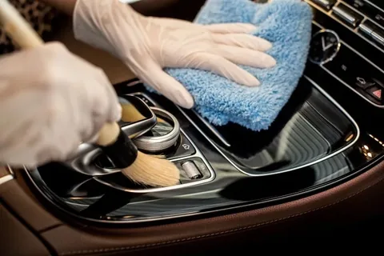
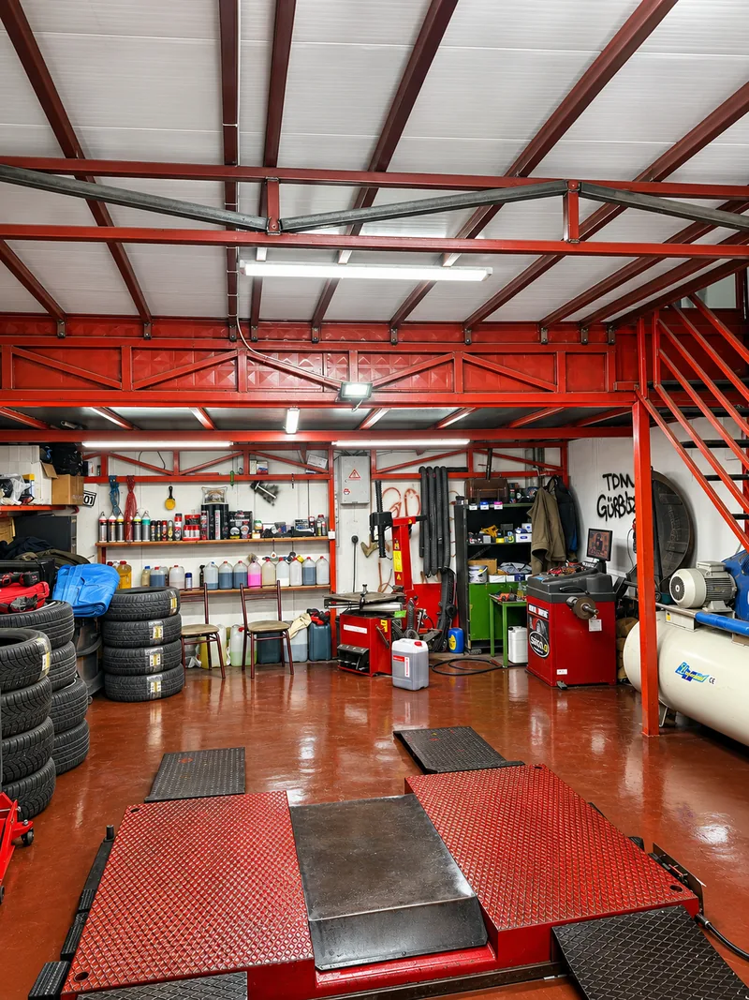
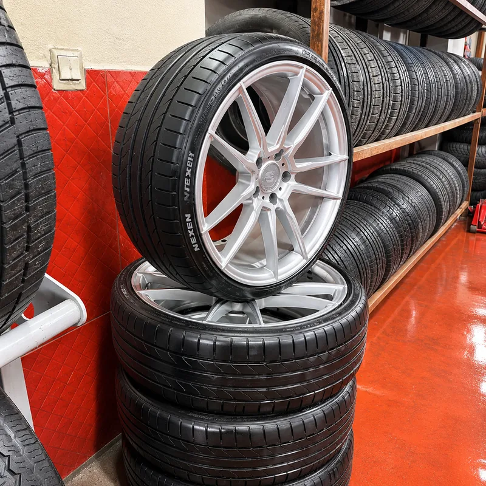
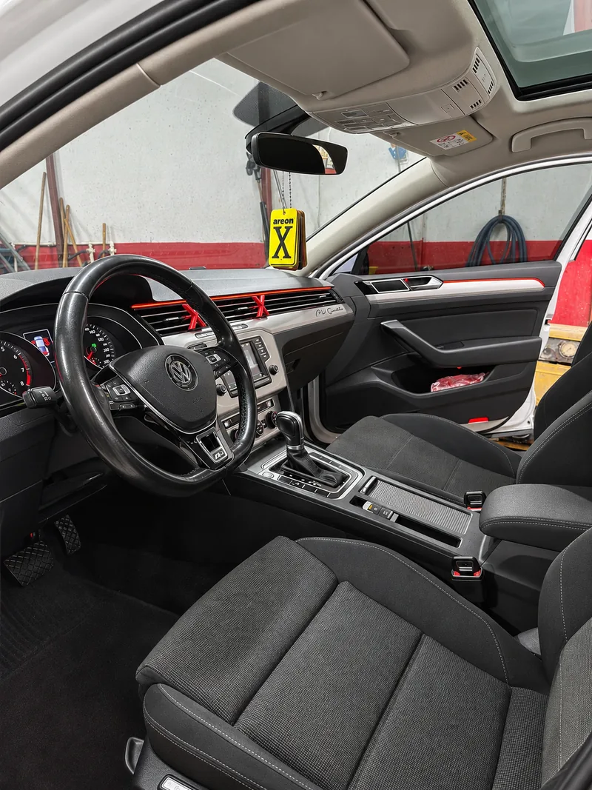

İç & dış bakım
Oto Yıkama
Günlük yol izlerinden arınan bir görünüm. İç ve dış temizlik kapsamını aracınıza göre birlikte belirleyelim.
Oto yıkama, oto kuaför ve lastik hizmetlerini inceleyin. Kapsam, güncel fiyat ve randevu için doğrudan bize ulaşın.
Günlük yol izlerinden arınan bir görünüm. İç ve dış temizlik kapsamını aracınıza göre birlikte belirleyelim.

Detaylı araç bakımıKabin, döşeme ve kullanım alanları için daha detaylı bir bakım. İhtiyacınızı paylaşın, kapsamı netleştirelim.
 Boya yüzeyi bakımı
Boya yüzeyi bakımıMatlaşan boya görünümü için yüzey değerlendirmesi. Aracınıza uygun uygulamayı işlem öncesinde konuşalım.
 Ölçüye göre stok sorgusu
Ölçüye göre stok sorgusuAracınızın ölçüsüne göre ikinci el lastik seçeneklerini sorun. Güncel stok ve fiyat bilgisini doğrudan alın.

Yerinde değerlendirmeHava kaçıran veya hasar gören lastiğiniz için işletmemizde değerlendirme. Tamir uygunluğunu birlikte netleştirelim.

Alım & satımSıfır jant, lastik ve alım satım talepleriniz için araç bilgilerinizi iletin. Ölçüye uygun seçenekleri öğrenin.
Ölçünüze ve ihtiyacınıza uygun sıfır lastik seçenekleri için güncel stok ve fiyat bilgisi alın.

Koltuk & döşemeKoltuk, tavan, zemin ve bagaj için aracın ihtiyacına göre değerlendirilen detaylı iç temizlik.
Yüzey bakım seçeneğiBoya yüzeyi için seramik kaplama seçeneklerinin kapsamını, ürününü ve uygulama uygunluğunu sorun.
Uygulama görsellerinin bir kısmı temsilidir; işletme, atölye ve lastik rafı fotoğrafları gerçek işletmemize aittir. Stok ve fiyat için iletişim kurun.
Oto bakım talebinizi veya aradığınız lastiğin ölçüsünü paylaşın. Güncel bilgiyle ziyaretinizi planlayın.
Gelmeden önce arayarak müsaitlik ve stok bilgisi alabilirsiniz.
Darende’deyiz. Çevre ilçe ve mahallelerden gelmeden önce bize ulaşabilirsiniz.
Harita butona bastığınızda Google üzerinden yüklenir. Konum, verilen adresle aranır.